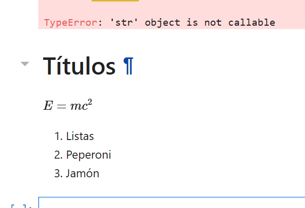
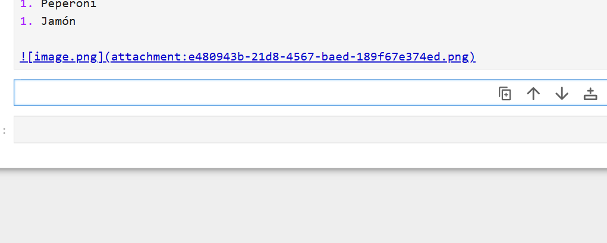

entero = 1
flotantes = 1.
complejos = 1 + 0j
cadenas = "cadenas"
boleanos = True
diccionarios = {"llave":"valor", "llave2":1}
tuplas = (1,.1,"cadenas")
listas = [1,1.,"hola"]4 diccionario =
cadenas = "a"
numero_cadena = "1"
otra_cadena = 'b'
doblecadena = "'cadena doble'"doblecadena"'cadena doble'"materiales = {
"cobre":{"densidad":250_000,"cp":1000.,"k":65.},
"adamantium":{"densidad":2500_000,"cp":1000.,"k":65.},
"oro":{"densidad":2500_000,"cp":1000.,"k":65.},
"kriptonita":{"densidad":2500_000,"cp":1000.,"k":65.},
}materiales["cobre"]["cp"]1000.0materiales["cobre"].keys()dict_keys(['densidad', 'cp', 'k'])materiales.items()dict_items([('cobre', {'densidad': 250000, 'cp': 1000.0, 'k': 65.0}), ('adamantium', {'densidad': 2500000, 'cp': 1000.0, 'k': 65.0}), ('oro', {'densidad': 2500000, 'cp': 1000.0, 'k': 65.0}), ('kriptonita', {'densidad': 2500000, 'cp': 1000.0, 'k': 65.0})])materiales.Cell In[9], line 1 materiales. ^ SyntaxError: invalid syntax
type(listas)listtupla_colores = ("azul","rojo",'verde')
lista_colores = ["amarillo","morado","azul"]tupla_colores[0]'azul'lista_colores[0]'amarillo'lista_colores[0] = "amarillo_pollito"
tupla_colores[0] = "amarillo_pollito"--------------------------------------------------------------------------- TypeError Traceback (most recent call last) Cell In[14], line 2 1 lista_colores[0] = "amarillo_pollito" ----> 2 tupla_colores[0] = "amarillo_pollito" TypeError: 'tuple' object does not support item assignment
tupla_colores = ("dos","numeros")True, False, type, dir, if, else, def, list, tuple, int, float, sumdir = "Cierto"
sum = "algo"sum(1,2)5 Títulos
$ E = mc^2 $
- Listas
- Peperoni
- Jamón


# %cd ../%pwd'C:\\Users\\gbv\\curso-2026-1-main\\notebooks'%lsmagicAvailable line magics:
%alias %alias_magic %autoawait %autocall %automagic %autosave %bookmark %cd %clear %cls %code_wrap %colors %conda %config %connect_info %copy %ddir %debug %dhist %dirs %doctest_mode %echo %ed %edit %env %gui %hist %history %killbgscripts %ldir %less %load %load_ext %loadpy %logoff %logon %logstart %logstate %logstop %ls %lsmagic %macro %magic %mamba %matplotlib %micromamba %mkdir %more %notebook %page %pastebin %pdb %pdef %pdoc %pfile %pinfo %pinfo2 %pip %popd %pprint %precision %prun %psearch %psource %pushd %pwd %pycat %pylab %qtconsole %quickref %recall %rehashx %reload_ext %ren %rep %rerun %reset %reset_selective %rmdir %run %save %sc %set_env %store %sx %system %tb %time %timeit %unalias %unload_ext %uv %who %who_ls %whos %xdel %xmode
Available cell magics:
%%! %%HTML %%SVG %%bash %%capture %%cmd %%code_wrap %%debug %%file %%html %%javascript %%js %%latex %%markdown %%perl %%prun %%pypy %%python %%python2 %%python3 %%ruby %%script %%sh %%svg %%sx %%system %%time %%timeit %%writefile
Automagic is ON, % prefix IS NOT needed for line magics.%time
lista = ["1","2",3,56]CPU times: total: 0 ns
Wall time: 0 ns%historyentero = 1
flotantes = 1.
complejos = 1 + 0j
cadenas = "cadenas"
boleanos = True
diccionarios = {"llave":"valor", "llave2":1}
tuplas = (1,.1,"cadenas")
listas = [1,1.,"hola"]
cadenas = "a"
numero_cadena = "1"
otra_cadena = 'b'
doblecadena = "'cadena doble'"
doblecadena
materiales = {
"cobre":{"densidad":250_000,"cp":1000.,"k":65.},
"adamantium":{"densidad":2500_000,"cp":1000.,"k":65.},
"oro":{"densidad":2500_000,"cp":1000.,"k":65.},
"kriptonita":{"densidad":2500_000,"cp":1000.,"k":65.},
}
# diccionario =
materiales["cobre"]["cp"]
materiales["cobre"].keys()
materiales.items()
materiales.
type(listas)
tupla_colores = ("azul","rojo",'verde')
lista_colores = ["amarillo","morado","azul"]
tupla_colores[0]
lista_colores[0]
lista_colores[0] = "amarillo_pollito"
tupla_colores[0] = "amarillo_pollito"
# %cd ../
%pwd
%lsmagic
%time
%time
lista = ["1","2",3,56]
%history%whoboleanos cadenas complejos diccionarios doblecadena entero flotantes lista lista_colores
listas materiales numero_cadena otra_cadena tupla_colores tuplas %who intentero %who listlista lista_colores listas %who_ls['boleanos',
'cadenas',
'complejos',
'diccionarios',
'doblecadena',
'entero',
'flotantes',
'lista',
'lista_colores',
'listas',
'materiales',
'numero_cadena',
'otra_cadena',
'tupla_colores',
'tuplas']%whosVariable Type Data/Info
------------------------------------
boleanos bool True
cadenas str a
complejos complex (1+0j)
diccionarios dict n=2
doblecadena str 'cadena doble'
entero int 1
flotantes float 1.0
lista list n=4
lista_colores list n=3
listas list n=3
materiales dict n=4
numero_cadena str 1
otra_cadena str b
tupla_colores tuple n=3
tuplas tuple n=3# %uv add pandasUsageError: Cell magic `%%uv` not found (But line magic `%uv` exists, did you mean that instead?).